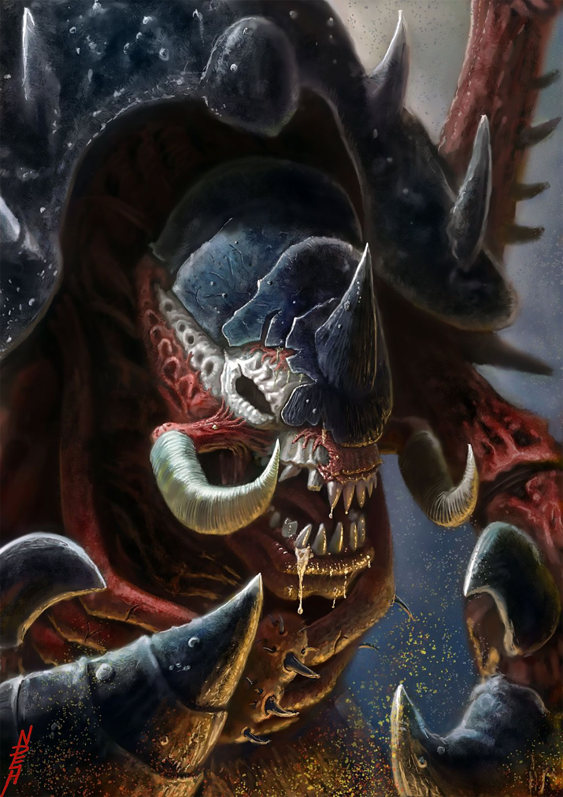
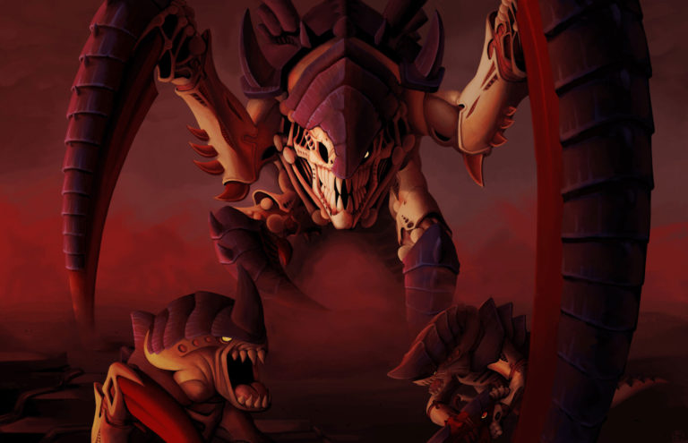
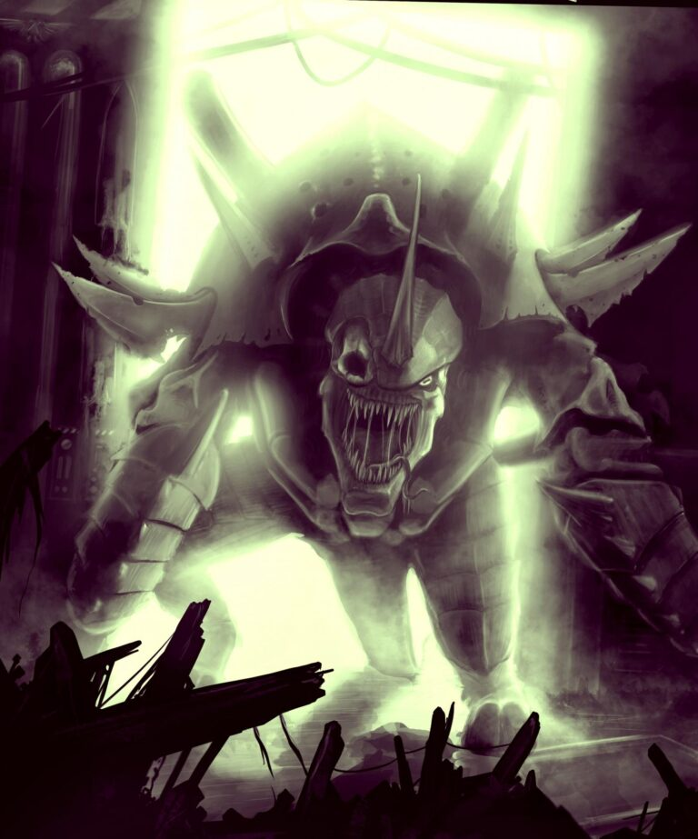

O VELHO CAOLHO
Lenda de Calth • Carnifex Alfa • Arauto da Frota-Colmeia Behemoth

Origem
O Velho Caolho (Old One Eye) não é um líder tático ou uma criatura com intelecto humanoide; ele é a força bruta e primordial da evolução Tyranida encarnada em um monstruoso Carnifex. Sua lenda começou nas cavernas congeladas do mundo de Calth, durante a primeira grande invasão da Frota-Colmeia Behemoth.
Durante a defesa de Calth, um herói dos Ultramarines disparou uma arma de plasma no rosto do monstro, obliterando o seu olho direito e parte do crânio em uma ferida que deveria ter sido letal. O Carnifex tombou, dado como morto, e ficou congelado no gelo por décadas após a guerra ter acabado.
No entanto, a biomassa Tyranida é inquebrável. Aquecido por contrabandistas incautos que escavavam o gelo anos depois, o Velho Caolho despertou de sua hibernação criogênica. Movido apenas pela fome cega e instinto assassino, ele exterminou a tripulação e, mesmo desconectado da Mente Coletiva, iniciou sua própria campanha solitária de aniquilação pelo planeta, regenerando seus ferimentos através da carnificina.

Credo de Guerra
*Um rugido ensurdecedor que abala a terra, seguido pelo som de ossos quebrando e blindagem de ceramite sendo partida ao meio, sinaliza o fim.*
O Credo de Guerra do Velho Caolho não existe em palavras; existe na devastação brutal que ele causa. Diferente de Swarmlords que planejam, o Velho Caolho é usado pela Mente Coletiva como um aríete vivo, uma força singular de destruição incontrolável para quebrar as defesas mais obstinadas.
Por onde a Mente Coletiva o invoca e gera (ou quando seus esporos sobrevivem para reformá-lo), sua presença estimula feromonalmente outros Carnifexes e bestas gigantes da colmeia. Eles entram em um frenesi sangrento incontrolável, tornando as investidas blindadas Tyranidas quase impossíveis de serem paradas por fogo convencional.
Ele lidera os "Esmagadores" (Crusher Stampede). Não recua, não sente medo e ignora ferimentos que derrubariam dreadnoughts. Onde a sutileza do Lictor falha, o peso bruto do Velho Caolho destrói.
Capacidade Bélica
- Regeneração Mutante: A característica mais assustadora da criatura. Devido ao ferimento no crânio que não fechou perfeitamente, o Velho Caolho desenvolveu uma capacidade de cicatrização instantânea que estanca sangramentos e reconstrói órgãos enquanto ele luta.
- Garras Esmagadoras (Crushing Claws): Seus membros dianteiros evoluíram em garras de tamanho absurdo, semelhantes às pinças de um caranguejo colossal, capazes de rasgar armaduras Terminator e tanques Leman Russ como se fossem latas de alumínio.
- Foices Monstruosas (Scything Talons): Garras adicionais finas e afiadas como navalhas, perfeitas para desmembrar hordas de infantaria.
- Líder Alfa de Carnifexes: Emite um feromônio constante no campo de batalha que leva outras criaturas monstrosas a um estado berserker implacável, multiplicando a violência do ataque.
- Imortalidade Gênica: Mesmo se morto, a Mente Coletiva aprendeu sua matriz genética perfeitamente. O "Velho Caolho" sempre renascerá nos poços de desova da Frota-Colmeia com todas as suas mutações mortais intactas.
Localização Atual: Invocado por várias frotas-colmeia (Leviatã, Kraken, Behemoth) quando a destruição de blindados inimigos é a prioridade.
Status: Ativo - Renascendo eternamente para a guerra e saciando sua fome implacável.
